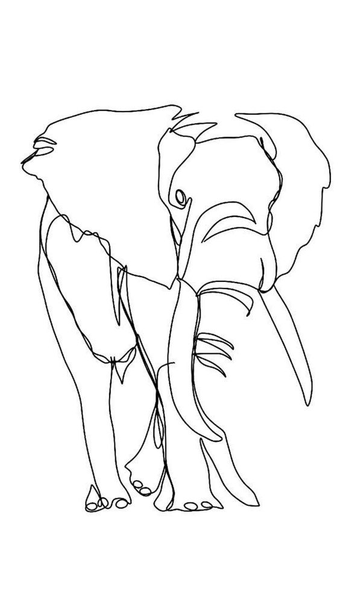
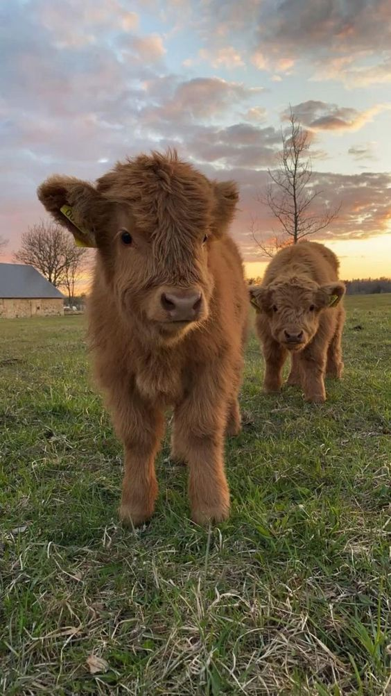

начало |
"Плюшени" крави |
Стъклена жаба |
Панда мравка |
Листовиден морски дракон |
 |
Повечето животновъди отглеждат крави за мляко, месо и кожа. Има обаче няколко много специални вида крави, ползите от които са насочени в коренно различна посока. Един такъв вид е американската плюшена крава.Повечето от тези крави се отглеждат с цел участие в различни изложби и конкурси.Всеки ден вълната им трябва да се подлага на специални процедури, които включват измиване, разресване, сушене и стилизиране.Преди всяка изложба или конкурс вълната се комбинира допълнително със специални четки и се обработва с различни масла и мастни маси, което й придава допълнителен обем и блясък. Интересен факт е ,че плюшената крава е единствената порода животни в света, която има своя официална марка за меки играчки. |
| начало "Плюшени" крави Стъклена жаба Панда мравка Листовиден морски дракон |